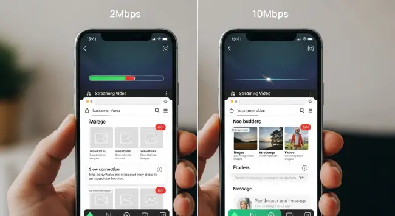

ความเร็วเน็ต 1-10 Mbps ต่างกันแค่ไหน? เน็ตไม่อั้นติด FUP คืออะไร? บทความนี้มีคำตอบครบ!
เวลาเลือกสมัครโปรเน็ตเสริม เรามักจะเจอคำศัพท์ชวนสับสนมากมาย เช่น Mbps, Gbps, เน็ตไม่อั้น, ติด FUP แล้วเคยสงสัยไหมครับว่าแต่ละอย่างคืออะไร และเราควรเลือกแบบไหนให้เหมาะกับการใช้งานของเรามากที่สุด? บทความนี้จะไขทุกข้อสงสัยให้กระจ่างครับ
"ความเร็วเน็ต" คืออะไร? (Mbps vs Gbps)
ความเร็วอินเทอร์เน็ตมักจะวัดกันด้วยหน่วย bps (bits per second) ซึ่งหมายถึงปริมาณข้อมูลที่สามารถรับ-ส่งได้ใน 1 วินาที แต่เนื่องจากข้อมูลมีขนาดใหญ่ เราจึงมักจะเห็นหน่วยที่เป็นตัวย่อแทน:
- Kbps (Kilobits per second): เท่ากับ 1,000 bps (ความเร็วเน็ตสมัยก่อน)
- Mbps (Megabits per second): เท่ากับ 1,000 Kbps (หน่วยที่เห็นบ่อยที่สุดในโปรมือถือ)
- Gbps (Gigabits per second): เท่ากับ 1,000 Mbps (มักใช้กับเน็ตบ้านความเร็วสูง)
ดังนั้น ยิ่งตัวเลข Mbps สูงเท่าไหร่ ก็หมายความว่าอินเทอร์เน็ตของคุณยิ่งมีความเร็วสูงขึ้นเท่านั้นครับ

"เน็ตไม่อั้น แต่ติด FUP" คืออะไรกันแน่?
นี่คือคำที่สร้างความสับสนมากที่สุดคำหนึ่ง! FUP ย่อมาจาก Fair Usage Policy เป็นนโยบายการใช้งานอินเทอร์เน็ตอย่างเหมาะสม เพื่อป้องกันไม่ให้ผู้ใช้คนใดคนหนึ่งใช้งานปริมาณข้อมูลมากเกินไปจนกระทบกับความเร็วของผู้ใช้คนอื่นๆ ในพื้นที่เดียวกัน
ดังนั้น "เน็ตไม่อั้น แต่ติด FUP" หมายความว่า:
- คุณจะสามารถใช้งานอินเทอร์เน็ตที่ ความเร็วสูงสุด ของแพ็กเกจ (เช่น 10 Mbps) ได้ตาม ปริมาณที่กำหนด (เช่น 70 GB)
- เมื่อคุณใช้งานครบตามปริมาณที่กำหนดแล้ว คุณจะยังสามารถ ใช้งานอินเทอร์เน็ตต่อไปได้เรื่อยๆ แบบไม่จำกัด แต่...
- ความเร็วจะถูกปรับลดลง มาอยู่ที่ค่าที่กำหนดไว้ใน FUP (เช่น 128 Kbps, 384 Kbps, หรือ 1 Mbps) จนกว่าจะครบรอบบิลของแพ็กเกจ
ในขณะที่โปรที่ระบุว่า "ไม่ลดสปีด" จะหมายถึงโปรเน็ตที่คุณสามารถใช้งานได้ที่ความเร็วคงที่ตลอดอายุแพ็กเกจ โดยไม่มีการจำกัดปริมาณข้อมูลและไม่มี FUP ครับ
เลือกความเร็วเน็ตเท่าไหร่ ให้เหมาะกับการใช้งาน?
เพื่อให้เห็นภาพชัดขึ้น เรามาดูกันว่าความเร็วเน็ตแต่ละระดับ เหมาะกับการใช้งานประเภทไหนบ้าง
| ความเร็ว | เหมาะกับการใช้งาน |
|---|---|
| 512 Kbps - 1 Mbps | เล่นโซเชียล (Facebook, LINE), ส่งข้อความ, ฟังเพลงออนไลน์ (Spotify, Joox) |
| 2 Mbps - 4 Mbps | ดู YouTube (ความละเอียด 480p-720p), ดู Live สด, เล่นโซเชียลแบบมีรูปภาพและวิดีโอเยอะๆ |
| 6 Mbps - 10 Mbps | ดู YouTube/Netflix (ความละเอียด Full HD 1080p), เล่นเกมออนไลน์, Video Call |
| 15 Mbps ขึ้นไป | สตรีมวิดีโอความละเอียดสูง (4K), Live Stream, ดาวน์โหลด/อัปโหลดไฟล์ขนาดใหญ่ |

การเลือกความเร็วที่เหมาะสมจะช่วยให้คุณจ่ายค่าบริการได้อย่างคุ้มค่าและได้รับประสบการณ์การใช้งานที่ดีที่สุด หากคุณยังไม่แน่ใจว่าจะเลือกโปรไหนดี ลองดูโปรโมชันหลากหลายความเร็วได้ที่หน้า โปรเน็ต AIS ของเรา เพื่อเปรียบเทียบและค้นหาแพ็กเกจที่ใช่สำหรับคุณ